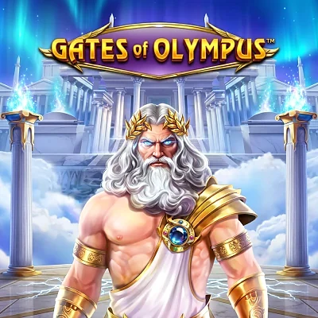
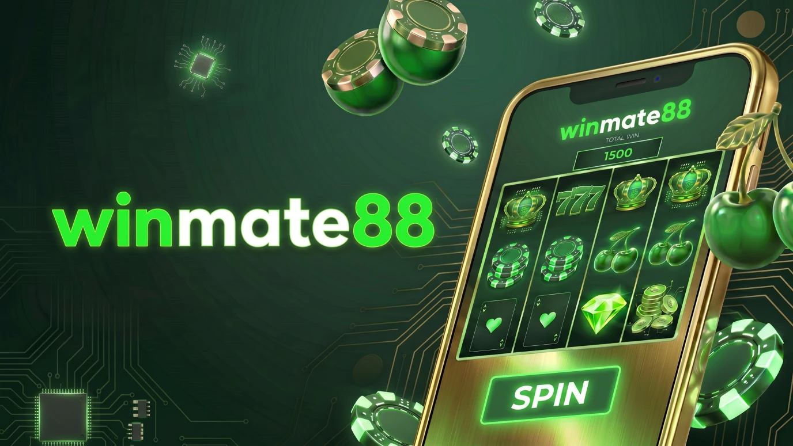
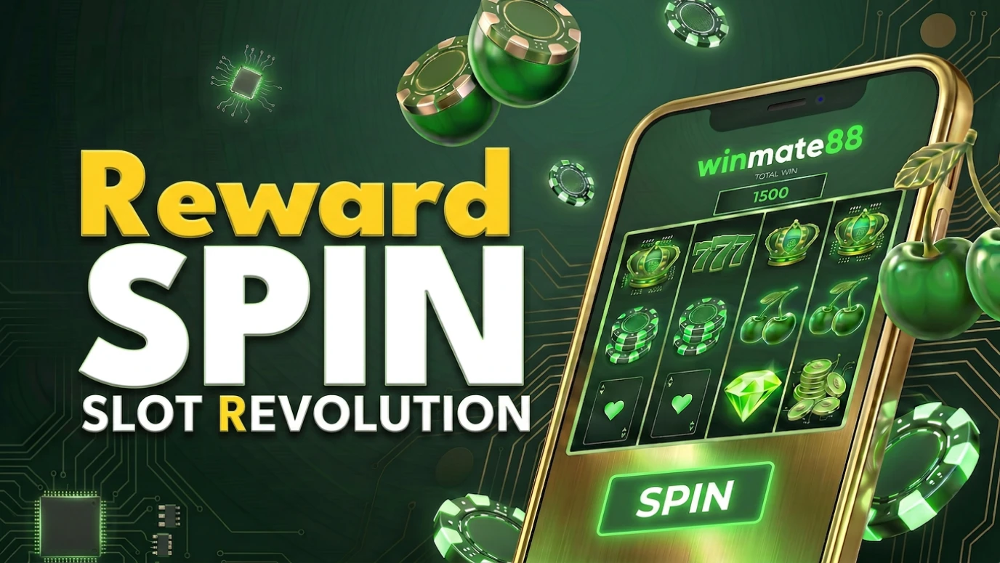
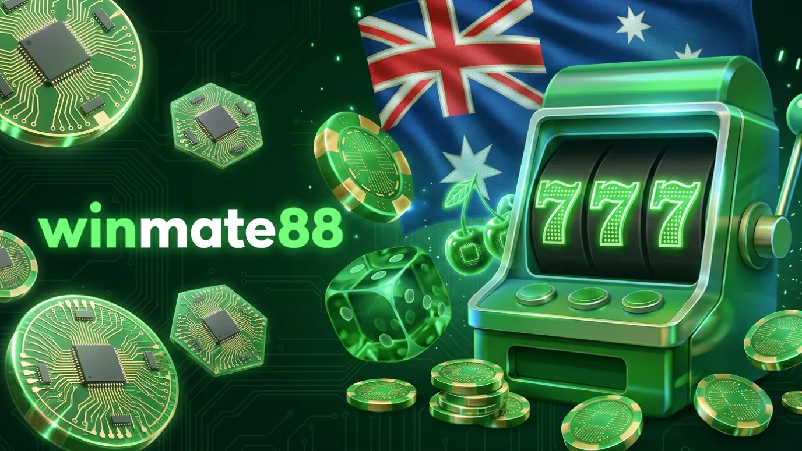
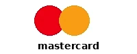
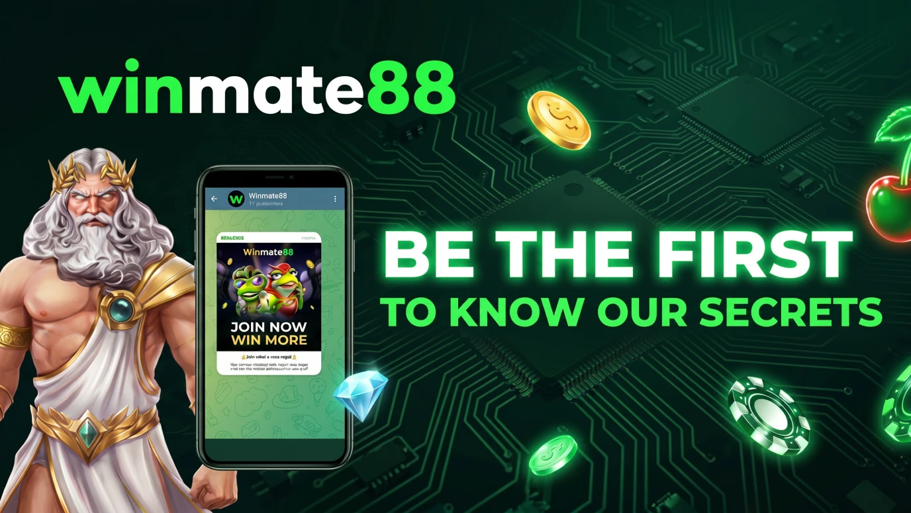
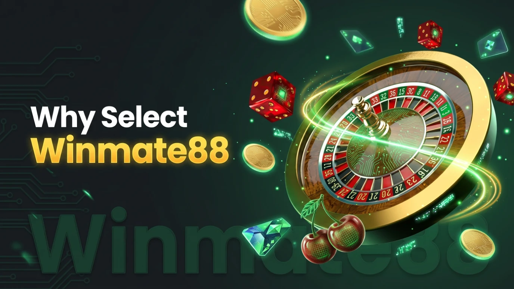

Winmate88 — Trusted Online Casino Built for Aussie Players
Play Winmate88Top Games





People digging into Winmate88 typically want a straight answer on what's in the game lobby, how the welcome offer actually works, which deposit and cashout rails are honoured, what registration looks like end-to-end, and how the platform performs across phones and laptops. Beyond that, the recurring questions cover account access, identity verification, support response times, and what to expect realistically before any real-money commitment.
This breakdown is built for adults in Australia who'd rather see plain information than marketing varnish. The broader purpose of the project is laid out on the About page. We move through game variety, money flow, document checks, day-to-day handling, and player-safety controls, anchored by one rule: gambling is paid leisure, not a wage replacement.
Table of Contents
- What Winmate88 actually is
- Why Aussies look up Winmate88
- From sign-up to first spin at Winmate88
- Welcome package and bonus fine print
- Pokies, tables, live dealer, and other formats
- Deposits, cashouts, and Winmate88 banking checks
- Payment Methods
- KYC, account safety, and common holdups
- Mobile play, site access, and Winmate88 login fixes
- VIP ladder, recurring perks, and long-term value
- A practical way to judge Winmate88
- Honest strengths and trade-offs
- Safer play and the Australian regulatory context
- Player Feedback
- Frequently Asked Questions
What Winmate88 actually is
Winmate88 markets itself as an offshore online casino aimed at Australian audiences, holding a Curaçao gaming licence in operation since 2015. The lobby leans on pokies, table classics, live-dealer rooms, and crash titles, paired with payment rails matched to Aussie habits. For most punters, however, the deciding question stretches past the homepage. It's about how the entire account journey holds up from registration to play, KYC, and cashout day.

An honest take has to look further than the welcome graphic or the game thumbnails. It needs to weigh banking infrastructure, document checks, account-protection layers, support availability, mobile readiness, and how plainly the rules are spelled out before a single dollar moves. That's the standard worth applying to any offshore operator targeting Australia.
Winmate88 frames itself as Australia-facing with a deliberate emphasis on local-style payment options, a deep pokies catalogue, browser-based mobile play, accessible support, and clear answers to the everyday account questions players actually run into. When evaluating any operator that targets this audience, particularly under the country's online wagering rules administered by the Australian Communications and Media Authority (ACMA), one principle stays useful: gambling is a paid hobby, not a road to dependable earnings.
| Attribute | Value |
|---|---|
| Licence | Curaçao (operating since 2015) |
| Game library | 3,000+ titles from 60+ providers |
| Welcome bonus | 100% up to A$500 + 100 free spins |
| Wagering | 35x bonus funds |
| Min deposit | A$10 |
| Currencies | AUD, USD, EUR, crypto |
| Support | 24/7 live chat, email, Telegram |
| RNG audits | iTech Labs |
| Platforms | Desktop, Mobile (HTML5) |
Why Aussies look up Winmate88
Branded searches usually pop up when somebody wants to verify a few practical points before pulling the trigger, or before logging back into an existing account. In the Australian segment, that often boils down to checking the pokies range, parsing the bonus wording, gauging payout expectations, confirming mobile fit, and seeing whether the registration plus verification path looks workable.
Some people are doing pre-signup homework, others are already on the books and need clarity on access, banking, or terms. The lived-in experience can vary depending on account standing, the chosen funding rail, KYC progress, current platform settings, and whether players have layered on national tools like the BetStop National Self-Exclusion Register. How visitor data on this site is treated is described on the Privacy Policy page, and the cookie footprint is detailed on the Cookie Policy page.
- To check which pokies, table games, and live-dealer titles populate the lobby
- To unpack the Winmate88 bonus mechanics and the wording behind each promotion
- To compare deposit channels and Winmate88 cashout handling side by side
- To troubleshoot Winmate88 login glitches or recover a lost password
- To confirm browser-based mobile play and overall everyday usability
- To map out the verification stages that come before or alongside a payout
From sign-up to first spin at Winmate88
For most users the journey opens with creating an account, then moves through email confirmation, the first deposit, choosing games, and eventually cashout checks if real-money play follows. Available features and how an account is treated may shift with platform policy, the funding method on file, and whether identity review has already wrapped up.
Sign-up typically asks for a full name, email address, date of birth, mobile number, residential address, and a chosen password. Email confirmation is part of setup, and a document review may be triggered before any payout is approved.
- Complete registration with personal details and lock in a password
- Confirm the email address attached to the account
- Top up the wallet through one of the supported channels for real-money play
- Browse the catalogue using navigation, search, or filters like provider or volatility
- Upload KYC documents when the cashier or compliance team requests them
- Submit a withdrawal via an eligible method, subject to outstanding checks
The path looks light on paper, but skimming the platform terms before depositing remains a sound habit. Bonus eligibility, banking access, and processing speed can change with account standing or internal review, and any account holder should always confirm their position under the Interactive Gambling Act 2001.
Welcome package and bonus fine print: what to verify
Promotions tend to grab attention first, but the headline number rarely tells the whole story. What really decides value is how the offer breaks down, the wagering attached, which titles count toward clearing it, and what conditions might quietly clip a future cashout.

Winmate88 fronts its sign-up offer as a 100% match up to A$500 plus 100 free spins on selected pokies, with a minimum deposit of A$10 to qualify. Bonus credits carry a 35x wagering condition, and the clearing window typically runs to 30 days. Free spins are tied to specific pokies. Slots count 100% toward wagering while table games normally count around 10%, so the contribution rate matters when planning play-through.
The recurring promo lineup includes a $28 balance top-up when funds drop to 60%, an $88 birthday reward, weekly achievement payouts for higher depositors, and a small share-bonus for active community members.
Bonus terms breakdown
| Offer area | What to verify | Why it matters |
|---|---|---|
| Welcome match | Match percentage, A$500 cap, and the 100 free-spin allocation | Reveals the real ceiling rather than the headline figure |
| Wagering 35x | Multiplier scope, eligible games, and the 30-day window | Determines whether the offer is genuinely clearable |
| Free spins | Qualifying pokies, expiry timer, and any cashout caps | Sets the actual ceiling on spin-based winnings |
| Recurring promos | Eligibility rules, opt-in steps, and required activity | Not every offer applies to every account or tier |
| Bet caps | Maximum stake while a bonus is in play | Crossing the cap can void the bonus and any related payout |
| Cashout rules | Extra conditions placed on bonus-linked winnings | Critical reading before counting on any promo value |
Reading the small print first remains the safest move. It clarifies whether an offer genuinely fits your playstyle or just looks tempting at a glance, and material from GamCare can also help spot warning signs in promotional offers before any deposit lands.
Pokies, tables, live dealer, and other gameplay formats
Game variety usually anchors how players judge Winmate88. The catalogue runs to 3,000+ titles drawn from 60+ studios, broken down into pokies, classic tables, live-dealer rooms, and crash-style formats.
The pokies shelf covers traditional three-reel slots, video pokies, Megaways setups, cluster-pay grids, tumbling reels, and progressive jackpots. Listed studios include NetEnt, Microgaming, Pragmatic Play, Evolution Gaming, Betsoft, Play'n GO, Habanero, and BGaming. Crash titles like Aviator and Spaceman sit alongside the standard pokies feed for players who want shorter, faster rounds.
For anyone who prefers brief sessions or simpler mechanics, instant-win formats and trimmed-down table titles tend to suit, though the precise rules vary game by game.
| Game type | What to expect | Best suited to |
|---|---|---|
| Pokies | Largest section, mixed mechanics and volatility ranges | Players after themed or feature-rich sessions |
| Table games | Standard rule sets across blackjack, roulette, baccarat | Punters comfortable with traditional casino formats |
| Live casino | Streamed real-dealer rooms and game-show titles | Anyone wanting a more interactive flow |
| Crash games | Fast, multiplier-driven rounds like Aviator and Spaceman | Players chasing short, high-volatility action |
| Demo-style play | Risk-free trials where they're available | Users gauging game feel before committing real cash |
Deposits, cashouts, and Winmate88 banking checks
Topping up and pulling money out are connected but not the same. A deposit usually clears in seconds, while a withdrawal may pass through account review, route eligibility, or document approval before the funds actually leave the cashier.

The supported lineup includes: PayID, POLi, bank transfer through major Aussie banks (ANZ, NAB, Westpac, Commonwealth), Visa, Mastercard, e-wallets (Skrill, Neteller, ecoPayz, PayPal), and cryptocurrency. Supported currencies cover AUD, USD, EUR, plus crypto. PayID withdrawals are typically processed in under 10 minutes for verified accounts, e-wallets clear within roughly 24 hours, bank transfers run 2–4 business days, and card payouts usually need 3–5 days. POLi is deposit-only.
Before pushing through a deposit or cashout, players should make sure:
- The chosen method is enabled for both deposits and withdrawals
- The account has fully cleared verification before any payout request
- The payment name lines up exactly with the registered account holder
- The bonus terms don't restrict cashouts on linked winnings
- Internal review or provider timing isn't slowing the request down
- Card, bank, third-party, or network fees won't apply unexpectedly
- The selected currency matches the chosen banking route
- Method-specific limits and handling rules have been factored in
Payment Methods



KYC, account safety, and common holdups
Identity and age screening is standard practice on regulated online casino platforms. At Winmate88 the document review usually clears within 24–48 hours once the right files are uploaded.
Listed account-protection layers:
- 256-bit SSL encryption
- PCI DSS compliance
- Session-timeout settings
- Two-factor authentication
- RNG audits handled by iTech Labs
Frequent reasons cashouts or verification slow down:
- Mismatch between submitted name, address, or date-of-birth and the account record
- Document scans that are blurry, cropped, or past their expiry
- A payment method that doesn't match the registered account holder
- Pending email confirmation or unfilled profile fields
- Extra checks applied before a first payout is approved
- Proof-of-address documents that fall outside the recency rules
Concerns about how account-related issues are handled in this review can be raised through the Contact page.
Mobile play, site access, and Winmate88 login fixes
Winmate88 is built mobile-first: browser-based, fully responsive, and rendered through HTML5 across the major modern browsers, with no dedicated app to download. The site suggests pinning the page to the home screen for an app-style shortcut, while staying mindful of phishing attempts and look-alike domains flagged by the eSafety Commissioner.
Steps when login or access fails:
- Confirm the URL matches the official domain before typing any credentials
- Re-enter email and password carefully, double-check any autofill values
- Use the password-reset tool if existing credentials no longer get you in
- Clear the browser cache or test a different modern browser if pages misbehave
- Reach live chat or email support if access or account-review issues continue
VIP ladder, recurring perks, and long-term value
Winmate88 outlines a five-rung VIP ladder: Bronze → Silver → Gold → Platinum → Diamond.
Comp-point accrual ties to real-money wagering. Tier perks differ across cashback rates, point conversion, support priority, withdrawal handling, and personalised offers.
What to read before counting on loyalty perks
Players should examine how points are earned, whether all game categories pull equal weight, and whether certain rewards are gated behind higher tiers or specific account states. Worth checking too: whether cashback, birthday bonuses, or priority handling have hidden usage rules. Remember that VIP ladders can quietly extend session length, so resources from Gambler's Help are worth bookmarking.
A practical way to judge Winmate88
The lobby is organised around pokies, table games, and live casino, with search, favourites, and filters for provider, volatility, and RTP, backed by 24/7 live chat and email support. The funding model behind reviews on this site is laid out on the Affiliate Disclosure page.

Evaluation checklist:
- Confirm registration requirements are stated transparently before opening an account
- Read bonus terms in full, covering wagering and expiry windows
- Verify which payment methods cover both deposits and cashouts
- Have the required identity documents ready for upload on request
- Test how easily titles surface via search, filters, and favourites
- Check that mobile browser play runs smoothly on your device
- Review the available support channels and when each is most useful
- Look for visible safety controls like 2FA or session-time limits
- See whether responsible-gambling tools are easy to find and apply
Honest strengths and trade-offs
A balanced view tells more than a flat thumbs-up or thumbs-down. Winmate88 can suit some Aussie users thanks to its deep pokies catalogue, locally-tuned banking rails, browser-based mobile play, and around-the-clock support, but there are trade-offs worth weighing in everyday play.
Pros:
- Catalogue spans 3,000+ titles from 60+ studios across pokies, tables, and live casino
- Payment options include PayID, POLi, and major Aussie bank transfers (ANZ, NAB, Westpac, Commonwealth)
- Mobile browser play with no app install required
- Search, favourites, and filters that make game discovery quick
- 24/7 live chat for routine account and banking questions
Cons:
- Cashout speed can hinge on verification status and any open internal review
- Some methods cover deposits but not withdrawals (POLi being the obvious example)
- Bonus value can be eroded by 35x wagering, time limits, and game contribution rules
- Fees or network costs may show up on certain banking routes
- Mirror-domain confusion can muddy login if the URL isn't checked carefully. Anyone feeling pressured by losses can call Lifeline on 13 11 14 for free 24/7 crisis support
The takeaway: strong points in one area don't replace the need to read the fine print elsewhere. Banking consistency, account verification, and clearly written conditions remain central to how the platform plays out day to day. The editorial standards governing this review are spelled out on the Editorial Policy page.
Safer play and the Australian regulatory context
The platform is restricted to 18+ with age verification on registration. Available player-protection tools cover deposit limits (daily, weekly, or monthly caps), time-outs (short cooling-off blocks), session reminders (pop-ups tracking session length and total wagered), and self-exclusion (long-term account blocking from a few months up to a permanent close).

Online gambling in Australia is governed by the Interactive Gambling Act 2001, enforced by the Australian Communications and Media Authority (ACMA), with state and territory regulators sitting alongside it. Consumer protection is reinforced by BetStop, the National Self-Exclusion Register, which blocks players from every Australian-licensed online wagering operator in a single step.
If gambling stops feeling like fun, free 24/7 support is available through Gambling Help Online (1800 858 858), Gambler's Help, Lifeline (13 11 14), and the National Debt Helpline. Treat any deposit as the price of entertainment. If play starts affecting finances, relationships, or sleep, step back and reach out for support. Practical safer-play habits and the full set of Australian helplines are gathered on the Responsible Gambling page.
Key terms users may run into
Anyone weighing up Winmate88 should make sure these terms are clearly understood before any deposit lands. Realistic expectations around verification, payment consistency, account safety, and safer-play tooling matter just as much as the catalogue itself.
| Term | Meaning |
|---|---|
| KYC | Know Your Customer checks used to confirm identity and account details |
| Withdrawal | A request to move available funds out of the account through an eligible payment route |
| Deposit limit | A user-set or platform-applied cap on how much can be added to the account over a given period |
| Wagering requirement | A play-through condition tied to bonus funds or bonus-linked winnings |
| Contribution rate | How much different game types count toward clearing bonus wagering |
| Self-exclusion | A tool that blocks or restricts account access for a chosen period to support safer play |
Player Feedback
The feedback below reflects individual experiences and isn't a substitute for independent verification. Australian consumers can review their general rights through the Australian Competition and Consumer Commission (ACCC).